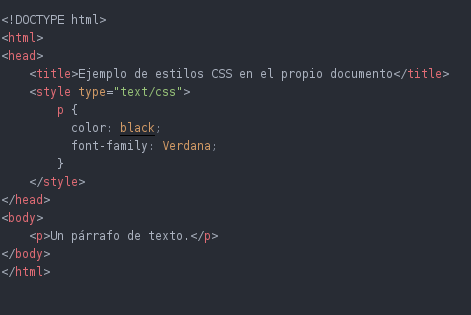

Sintaxis y Selectores CSS, Interacción Humano Ordenador
Propósito De Este Sitio
El motivo por el cuál queremos aprender a cerca de la sintaxis y los selectores CSS es porqué, este es el formato recomendado para las páginas escritas de HTML, con base a los estándares, CSS “Cascading Style Sheets” que se emplea para definir el aspecto de cada elemento. Durango, A. (2015) También debemos considerar al estudiar, que HTML es uno de los lenguajes de marca más importantes y útiles del mundo, contribuyendo así a la mayoría de los documentos de la World Wide Web según Cordero, J. J. T. (2014).
Importancia de CSS
Al crear una página web se utiliza en primer lugar el lenguaje
HTML para marcar los contenidos, es decir, designar la
función de cada elemento de la página: sección, párrafo, texto
destacado, tabla, lista ordenada, control, etc. La idea es que
esta parte tenga cada vez más semántica, dotando de sentido
a los documentos generados y sus secciones.
En segundo lugar, se emplea CSS para definir el aspecto de
cada elemento (color, tamano, tipo de letra, posición, etc.)
La especificación o norma oficial que se utilizaba hace algún
tiempo para establecer estilos con CSS era la versión CSS 2.1,
que se puede consultar en: https://www.w3.org/TR/CSS21(traducida en http://www.sidar.org/recur/desdi/
traduc/es/css/cover.html)
Sin embargo, hace anos la W3C trabaja en la elaboración de
lo que se conocía como CSS3, cuyo estándar ha quedado
dividido en muchas secciones, que se pueden consultar en este
enlace. Esta nueva versión incluye multitud de cambios
importantes a todos los niveles, siendo mucho más avanzada y
compleja que CSS2.
(Cabrera, L. V. (2012))
Este lenguaje y específicamente CSS mejora la comunicación de humano ordenador,
al ser un leguaje de marcas en cierta medida sencillo de a prender
